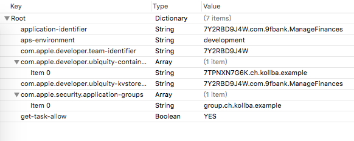

之前被问到有没有看过AFNetworking的源码，有没有看过SDWebImage的源码，我都非常尴尬的表示没有，非常受挫，所以决定着手看一下，证明自己其实看这个一点也不吃力，只是之前太忙没做而已。
一、先看各个类干什么的（一共有14个类）
首先看基础类
1、NSData+ImageContentType
只有1个方法，用来通过nsdata前几个字段来判断是gif、webp、png、jpg
之前被问到有没有看过AFNetworking的源码，有没有看过SDWebImage的源码，我都非常尴尬的表示没有，非常受挫，所以决定着手看一下，证明自己其实看这个一点也不吃力，只是之前太忙没做而已。
只有1个方法，用来通过nsdata前几个字段来判断是gif、webp、png、jpg
好奇心日报是一个媒体阅读类app，因此不可能放弃iPad这个平台，恰逢iPad pro上线，我们决定开发iPad版本并直接适配iOS9的新特性----分屏。
本文主要介绍了一个针对第三方app的自动操作插件的开发，多是入门级的基础知识，有利于获取兴趣，并且这个插件也确实解决了我的实际问题。
本文也是文章在iOS下为他人App开发自动化操作插件，实现挂机操作（1）后续的第二篇，着重介绍如可使用简单的逆向工程知识在实现一个越狱插件方便我们自己的日常。
虽然第三方框架AFNetworking SDWebImage都有自己的内存缓存和数据缓存，但有时候app内部有一些数据（json、image等）可能有必要单独缓存进行管理，本文就根据最近的需求设计了一个比较简单磁盘缓存工具。
最近为了玖富理财的自动化投钱，狠狠的研究了下如何hack别人的app inject自己的代码，收货良多。同时发现自己对此非常感兴趣，成就感膨胀！
so，今年多了一个目标：读完《iOS逆向工程（第二版）》，已经duokan下单，监督自己。
感谢微信，给了我进入iOS大门的机会，感谢微信，叫我系统化的iOS研究方法，给了我编写动态库和入门hack的基础，我将在此继续学习，继续充实。
这将是一个系列文章，包含各种学习研究过程，有生涩的基础，也有生动的实践，系列文章将伴随我的整个研究过程。
系列文章需要懂得iOS的基础知识，并且对iOS开发以及攻防有较多的兴趣的同行阅读，如果您是老鸟，请多多指正其中的不足。
本文将主要就是对近期的hack收货进行简单归集，避免忘记。
pp助手，我也很无语，不过这个用的真心多，越狱，文件查看，ipa安装，ssh打开，真心简单易用。charles，没的说，网络分析MachOView010 EditorFLEXTHOSiOSOpenDev如果改了原来代码，势必需要重签名，重签名是个坑，下面写两个对我有帮助的博文，稍后单独一片文章介绍我是如何踩坑的。
先来两张图，这两段代码是最后的完成稿：


iOS 证书管理、验证、打包流程，一点基础知识，小白先看看。
iOS证书及ipa包重签名探究，按照网上的一般攻略，总是失败，原来是iOS8.1后增加了安全机制。这篇是针对的一些解法，不过应该企业签名才是最终的王道解决。
代码签名探析，最详细的解析，代码重签名进阶使用。
iOS APP反重签名技术详解，知道了怎么重签，就要知道怎么攻防，避免别人用相同的方式搞你。
http://www.blogfshare.com/inject-with-njb.html
http://wiki.jikexueyuan.com/project/ios-security-defense/injection.html
http://www.opensource.apple.com/source/dyld/dyld-210.2.3/src/dyld.cpp
http://www.cnblogs.com/xiongwj0910/archive/2012/08/16/2642992.html
https://nadavrub.wordpress.com/2015/07/23/injecting-code-to-an-ios-appstore-app/
念茜的博客，业界知名iOS美女程序员，支付宝的iOS安全工程师
Alone_Monkey的博客，在安全领域也很有研究，真心长江后浪推前浪！
庞海礁，在重签名部分从他这里收获了很多，推荐有空看看。
2、关联引用 runtime机制
objc_setAssociatedObject(self, &key, value, OBJC_ASSOCITION_RETAIN)
objc_getAssociatedObject(self, &key)
3、NSCache iOS的缓存，线程安全
手机上经常会有一些需要我们重复操作的事情，做这些事情为的仅仅是一些利益结果，而并不关心过程，例如游戏打怪升级的固定关口，微信抢红包，或者一些别的什么商品的抢购流程。这时候如果能够有自动化插件就是最美妙的了。
本人之前在微信做iOS开发时，曾使用微信自己开发的 ExtensionCenter 框架来做事件的订阅和发布，使得代码各个层级完美解耦，当时就希望能将该思想应用于 Android开发领域。
在进行现有项目调研的过程中，发现了Android上的开源工程EventBus 和 otto，这两个工程和我想实现的ExtensionCenter思想非常类似，在具体应用上使用了java特有的特性，但也有一些不足。本文将首先针对otto的架构设计和源码进行分析，之后介绍个人融合 微信iOS版中ExtensionCenter思想的修改版otto的框架。
WWDC2014上发布的Xcode6在iOS上开放了动态库，可以直接通过xcode6*版本进行构建自己的framework动态库，具体可以参见New Features in Xcode 6至于具体能不能通过Appstore的审核，尚不清楚。
本文着重描述如何生成打包dylib动态库文件，对于生成dynamic framework请参见blog WWDC2014之iOS使用动态库。